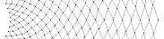
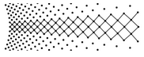
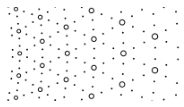
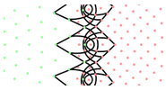
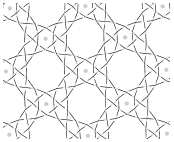
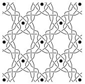
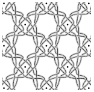
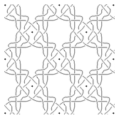

Overview of available applications.
Polar grids |
||
| Distorted effects of traditional graph paper. |  | |
| Propportional effects of provided applications. |  | |
|  | web | More patterns that scale better. You can design your own patterns, though the definitions might be a bit cryptic. |
|  | InkScape plugin | Allows matching nested grids. Less patterns but you can alter the result dot by dot. |
Diagram generators |
screenshot snippets of flanders thread diagrams with only half stitches |
|
|  | web | Many grounds. Any stitch. Pair and thread diagrams in a single view. Apply thread styles on the browser canvas. Not reducable to a pricking. |
|  | web + InkScape plugin | Many grounds. Limited sets of stitches, some grounds more than others. Generated diagrams can be downloaded with a right click. Apply thread styles with an InkScape plugin or pencil and tracing paper. Some grounds only have a pair diagrams. |
|  | desktop | Half a dozen of traditional grounds and half a dozen of braids. Export of step by step images can be imported by third party tools to create animated images. Fixed patch sizes that are relatively small. Replacing stitches is less intuitive and involves a few steps per stitch. |
|  | web | Flanders only. No Pair diagrams. Apply thread styles with tracing paper and pencil. |